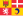
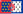
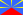
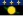
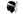
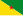
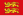
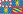

List of French regions and overseas collectivities by GDP
{kind=link}
This article lists French regions and overseas collectivities by gross domestic product (GDP).
Introduction INSEE and affiliate statistical offices in the overseas collectivities produce estimates of GDP in France's 18 regions and 5 overseas collectivities every year, and in some overseas collectivities where GDP estimates are made only every few years.
In 2011, France (whose territory in the national accounts refers to Metropolitan France plus the four old overseas regions of Guadeloupe, Martinique, French Guiana, and Réunion, but excludes Mayotte and the six overseas collectivities) had a GDP of US$2,778 bn, 98.2% of which was produced in Metropolitan France, and 1.8% in the four overseas regions.
Dynamics
[edit]Île-de-France (the Paris Region) has a much higher GDP per capita than the rest of France, due to its position as one of the "command centres" for the global economy, as well as its relatively low share of retirees. Outside Île-de-France, the 12 other regions of Metropolitan France show remarkably little disparity in their GDPs per capita.
The "poorest" region of Metropolitan France outside Île-de-France in 2016, Hauts-de-France, had a GDP per capita which was four fifths the level of the richest region Auvergne-Rhône-Alpes. This is in contrast to most neighbours of France where regional disparities are much more marked (East Germany vs West Germany, southern Spain and Italy vs northern Spain and Italy, Wallonia vs Flanders).
Overseas, only Saint Barthélemy, Saint Pierre and Miquelon, and New Caledonia have GDP per capita at the level of Metropolitan French regions. All other overseas regions and collectivities have GDP per capita noticeably lower than the Metropolitan French regions. The lowest is found in Mayotte, where GDP per capita was slightly less than a quarter of Metropolitan France's level in 2009, although it has been increasing a lot in recent years with the accession of Mayotte to overseas department and region status (and soon outermost region of the European Union, thus eligible for EU structural funds from 2014 on).
Gross domestic product
[edit]Nominal GDP in euros and CFP francs has been converted to US dollars at the €/US$ purchasing power parity rate of each given year.
| 2022 Rank |
Regions & collectivities | 2022 GDP (mil. of US$ PPP) |
2018 GDP (mil. of US$ PPP) |
2015 GDP (mil. of US$ PPP) |
2014 GDP (mil. of US$ PPP) |
2013 GDP (mil. of US$ PPP) |
|---|---|---|---|---|---|---|
| 3,914,754 | 2,765,540 | 2,696,180 | 2,659,360 | 2,606,140 | ||
| 1 | 1,160,945 | 964,751 | 820,365 | 807,038 | 792,104 | |
| 2 |  Auvergne-Rhône-Alpes | 451,955 | 373,259 | 308,867 | 304,050 | 295,610 |
| 3 | 306,678 | 219,513 | 188,175 | 186,312 | 184,584 | |
| 4 | 296,044 | 232,973 | 204,496 | 202,360 | 194,094 | |
| 5 | 286,386 | 228,195 | 194,005 | 191,087 | 186,741 | |
| 6 | 275,124 | 219,837 | 190,217 | 187,984 | 187,223 | |
| 7 | Grand Est | 265,412 | 213,004 | 187,878 | 187,326 | 183,381 |
| 8 |  Pays de la Loire | 203,298 | 155,384 | 133,128 | 130,615 | 129,155 |
| 9 | 170,861 | 130,363 | 113,287 | 110,973 | 107,805 | |
| 10 | 159,006 | 125,281 | 112,195 | 111,013 | 110,562 | |
| 11 | 129,868 | 103,385 | 91,956 | 91,559 | 88,403 | |
| 12 | Centre-Val de Loire | 118,658 | 98,049 | 86,026 | 85,253 | 84,609 |
| 13 |  Réunion | 32,142 | 24,892 | 22,865 | 22,319 | 21,523 |
| 14 |  Guadeloupe | 15,559 | 12,652 | 11,291 | 10,987 | 10,734 |
| 15 |  Corsica | 15,284 | 12,425 | 10,788 | 10,557 | 10,423 |
| 16 | 14,320 | 11,765 | 11,200 | 10,991 | 10,673 | |
| 17 |  French Guiana | 6,767 | 5,757 | 5,203 | 5,047 | 4,838 |
| 18 | Mayotte | 4,965 | 3,241 | 3,216 | 2,630 | 2,383 |
| — | France - not regionalised | 1,482 | 1,319 | 1,304 | 1,261 | 1,297 |
| — | — | — | — | — | 10,251 | |
| — | — | — | — | — | 7,943 | |
| — | — | — | — | — | 253 | |
| — | Last data is from 1999. GDP that year was US$449 million.[13] | |||||
| — | Last data is from 1999. GDP that year was US$191 million.[13] | |||||
| — | Last data is from 2005. GDP that year was US$188 million.[14] | |||||
- Notes
- ^ Metropolitan France + the four old overseas departments of Guadeloupe, Martinique, French Guiana, and Réunion. INSEE, Eurostat, the World Bank, and the IMF include neither the new overseas department of Mayotte, nor the overseas collectivities and New Caledonia when they publish economic figures of France.
Per capita GDP
[edit]Figures are in US dollars at purchasing power parity (PPP).
| 2022 Rank |
Regions & collectivities | 2022 GDP per capita (in US$ PPP) |
2018 GDP per capita (in US$ PPP) |
2015 GDP per capita (in US$ PPP) |
2014 GDP per capita (in US$ PPP) |
2013 GDP per capita (in US$ PPP) |
|---|---|---|---|---|---|---|
| 57,551 | 41,363 | 40,487 | 40,172 | 39,624 | ||
| 1 | Île-de-France | 93,936 | 78,863 | 67,740 | 66,947 | 66,043 |
| 2 | Provence-Alpes-Côte d'Azur | 59,470 | 43,388 | 37,499 | 37,294 | 37,150 |
| 3 | 55,278 | 46,585 | 39,070 | 38,736 | 37,951 | |
| 4 | 52,228 | 40,989 | 35,686 | 35,257 | 35,136 | |
| 5 | Brittany | 49,922 | 39,017 | 34,313 | 33,780 | 32,992 |
| 6 | Nouvelle-Aquitaine | 48,485 | 38,897 | 34,508 | 34,326 | 33,112 |
| 7 |  Normandy | 47,848 | 37,688 | 33,588 | 33,263 | 33,182 |
| 8 | 47,707 | 38,401 | 33,803 | 33,711 | 33,021 | |
| 9 | Occitanie | 47,063 | 38,662 | 33,468 | 33,218 | 32,720 |
| 10 |  Bourgogne-Franche-Comté | 46,506 | 36,861 | 32,605 | 32,459 | 31,347 |
| 11 | 46,122 | 38,134 | 33,349 | 33,069 | 32,871 | |
| 12 | Hauts-de-France | 45,961 | 36,639 | 31,632 | 31,289 | 31,219 |
| 13 | 43,564 | 36,500 | 32,790 | 32,410 | 32,349 | |
| 14 | Martinique | 40,587 | 32,092 | 29,516 | 28,840 | 27,855 |
| 15 | 38,050 | 30,164 | 26,098 | 25,192 | 24,462 | |
| 16 | 36,718 | 29,070 | 26,794 | 26,324 | 25,552 | |
| 17 | 22,980 | 20,624 | 19,756 | 19,784 | 19,531 | |
| 18 | 16,306 | 12,258 | 12,475 | — | — | |
| — | — | — | — | — | 42,356 | |
| — | — | — | — | — | 39,367 | |
| — | — | — | — | — | 27,352 | |
| — | Last data is from 1999. GDP per capita that year was US$27,737,[13] i.e. 113.5% of Metropolitan France's GDP per capita. | |||||
| — | Last data is from 1999. GDP per capita that year was US$15,469,[13] i.e. 63.3% of Metropolitan France's GDP per capita. | |||||
| — | Last data is from 2005. GDP per capita that year was US$13,102,[14] i.e. 37.9% of Metropolitan France's GDP per capita. | |||||
- Notes
- ^ Metropolitan France + the four old overseas departments of Guadeloupe, Martinique, French Guiana, and Réunion. INSEE, Eurostat, the World Bank, and the IMF include neither the new overseas department of Mayotte, nor the overseas collectivities and New Caledonia when they publish economic figures of France.
Departments by GDP
[edit]All 95 Departments of Metropolitan France by GDP and GDP per capita in 2021.[1]
| Department | Region | 2021 GDP (mil. of US$ PPP) |
2021 GDP per capita (in US$ PPP) |
|---|---|---|---|
| Paris | Île-de-France | 367,785 | 172,449 |
| Seine-et-Marne | Île-de-France | 61,803 | 42,912 |
| Yvelines | Île-de-France | 87,317 | 59,905 |
| Essonne | Île-de-France | 83,796 | 63,897 |
| Hauts-de-Seine | Île-de-France | 269,408 | 164,612 |
| Seine-Saint-Denis | Île-de-France | 96,970 | 58,035 |
| Val-de-Marne | Île-de-France | 81,481 | 57,270 |
| Val-d'Oise | Île-de-France | 56,067 | 44,259 |
| Cher | Centre-Val de Loire | 12,133 | 40,652 |
| Eure-et-Loir | Centre-Val de Loire | 17,579 | 40,946 |
| Indre | Centre-Val de Loire | 8,116 | 37,518 |
| Indre-et-Loire | Centre-Val de Loire | 28,556 | 46,496 |
| Loir-et-Cher | Centre-Val de Loire | 13,384 | 40,919 |
| Loiret | Centre-Val de Loire | 33,624 | 49,097 |
| Côte-d'Or | Bourgogne-Franche-Comté | 28,647 | 53,548 |
| Nièvre | Bourgogne-Franche-Comté | 7,517 | 37,540 |
| Saône-et-Loire | Bourgogne-Franche-Comté | 22,586 | 41,198 |
| Yonne | Bourgogne-Franche-Comté | 13,112 | 39,550 |
| Doubs | Bourgogne-Franche-Comté | 23,284 | 42,540 |
| Jura | Bourgogne-Franche-Comté | 10,316 | 40,044 |
| Haute-Saône | Bourgogne-Franche-Comté | 7,667 | 32,896 |
| Territoire de Belfort | Bourgogne-Franche-Comté | 5,555 | 40,133 |
| Eure | Normandy | 22,176 | 37,173 |
| Seine-Maritime | Normandy | 62,796 | 50,067 |
| Calvados | Normandy | 31,041 | 44,503 |
| Manche | Normandy | 20,733 | 42,041 |
| Orne | Normandy | 10,305 | 37,456 |
| Aisne | Hauts-de-France | 18,661 | 35,491 |
| Oise | Hauts-de-France | 33,225 | 39,941 |
| Somme | Hauts-de-France | 23,999 | 42,363 |
| Nord | Hauts-de-France | 125,315 | 48,059 |
| Pas-de-Calais | Hauts-de-France | 52,981 | 36,330 |
| Ardennes | Grand Est | 9,618 | 36,033 |
| Aube | Grand Est | 12,675 | 40,691 |
| Marne | Grand Est | 29,721 | 52,650 |
| Haute-Marne | Grand Est | 6,698 | 39,720 |
| Meurthe-et-Moselle | Grand Est | 30,386 | 41,554 |
| Meuse | Grand Est | 6,360 | 35,363 |
| Moselle | Grand Est | 40,447 | 38,599 |
| Vosges | Grand Est | 13,730 | 38,241 |
| Bas-Rhin | Grand Est | 60,393 | 52,228 |
| Haut-Rhin | Grand Est | 33,454 | 43,553 |
| Loire-Atlantique | Pays de la Loire | 79,949 | 54,360 |
| Maine-et-Loire | Pays de la Loire | 36,384 | 44,147 |
| Mayenne | Pays de la Loire | 14,301 | 46,739 |
| Sarthe | Pays de la Loire | 22,738 | 40,161 |
| Vendée | Pays de la Loire | 31,027 | 44,362 |
| Côtes-d'Armor | Brittany | 24,304 | 40,245 |
| Finistère | Brittany | 39,706 | 43,080 |
| Ille-et-Vilaine | Brittany | 58,174 | 52,708 |
| Morbihan | Brittany | 32,648 | 42,399 |
| Charente | Nouvelle-Aquitaine | 16,637 | 47,387 |
| Charente-Maritime | Nouvelle-Aquitaine | 26,649 | 40,384 |
| Deux-Sèvres | Nouvelle-Aquitaine | 17,701 | 47,272 |
| Vienne | Nouvelle-Aquitaine | 18,734 | 42,554 |
| Dordogne | Nouvelle-Aquitaine | 14,791 | 35,893 |
| Gironde | Nouvelle-Aquitaine | 89,345 | 53,569 |
| Landes | Nouvelle-Aquitaine | 16,558 | 39,203 |
| Lot-et-Garonne | Nouvelle-Aquitaine | 13,142 | 39,883 |
| Pyrénées-Atlantiques | Nouvelle-Aquitaine | 32,540 | 47,053 |
| Corrèze | Nouvelle-Aquitaine | 9,507 | 39,877 |
| Creuse | Nouvelle-Aquitaine | 3,606 | 31,528 |
| Haute-Vienne | Nouvelle-Aquitaine | 16,428 | 44,318 |
| Ariège | Occitanie | 5,051 | 32,839 |
| Aveyron | Occitanie | 11,136 | 39,795 |
| Haute-Garonne | Occitanie | 86,071 | 59,627 |
| Gers | Occitanie | 6,755 | 35,142 |
| Lot | Occitanie | 6,687 | 38,267 |
| Hautes-Pyrénées | Occitanie | 8,584 | 37,243 |
| Tarn | Occitanie | 14,427 | 36,734 |
| Tarn-et-Garonne | Occitanie | 9,616 | 36,444 |
| Aude | Occitanie | 12,985 | 34,335 |
| Gard | Occitanie | 29,025 | 38,512 |
| Hérault | Occitanie | 55,968 | 46,209 |
| Lozère | Occitanie | 3,009 | 39,287 |
| Pyrénées-Orientales | Occitanie | 17,864 | 36,759 |
| Ain | Auvergne-Rhône-Alpes | 25,761 | 36,759 |
| Ardèche | Auvergne-Rhône-Alpes | 11,234 | 33,987 |
| Drôme | Auvergne-Rhône-Alpes | 25,418 | 48,730 |
| Isère | Auvergne-Rhône-Alpes | 65,356 | 50,879 |
| Loire | Auvergne-Rhône-Alpes | 33,031 | 42,977 |
| Rhône | Auvergne-Rhône-Alpes | 141,872 | 74,508 |
| Savoie | Auvergne-Rhône-Alpes | 21,499 | 48,601 |
| Haute-Savoie | Auvergne-Rhône-Alpes | 37,142 | 43,834 |
| Allier | Auvergne-Rhône-Alpes | 13,014 | 39,051 |
| Cantal | Auvergne-Rhône-Alpes | 5,404 | 37,578 |
| Haute-Loire | Auvergne-Rhône-Alpes | 8,159 | 35,916 |
| Puy-de-Dôme | Auvergne-Rhône-Alpes | 33,376 | 49,971 |
| Alpes-de-Haute-Provence | Provence-Alpes-Côte d'Azur | 6,396 | 38,607 |
| Hautes-Alpes | Provence-Alpes-Côte d'Azur | 5,381 | 38,285 |
| Alpes-Maritimes | Provence-Alpes-Côte d'Azur | 57,725 | 52,305 |
| Bouches-du-Rhône | Provence-Alpes-Côte d'Azur | 139,713 | 67,848 |
| Var | Provence-Alpes-Côte d'Azur | 43,095 | 39,317 |
| Vaucluse | Provence-Alpes-Côte d'Azur | 26,831 | 47,663 |
| Corse-du-Sud | Corsica | 7,918 | 48,874 |
| Haute-Corse | Corsica | 6,866 | 36,968 |
See also
[edit]References
[edit]- ^ a b "Regions". data-explorer.oecd.org. Retrieved 2024-06-12.
- ^ a b Regions and Cities > Regional Statistics > Regional Economy > Regional GDP per Capita, OECD.Stats. Accessed on 16 November 2018.
- ^ a b "Produits intérieurs bruts régionaux et valeurs ajoutées régionales de 1990 à 2011". INSEE. Retrieved 2013-10-01.
- ^ a b "Regional statistics databases". Eurostat. Archived from the original on 2013-11-24. Retrieved 2013-10-02.
- ^ a b "Les comptes économiques de la Guadeloupe en 2011 : Une reprise en demi-teinte". INSEE. Retrieved 2013-10-02.
- ^ a b "Martinique - Rapport annuel 2012" (PDF). IEDOM. p. 33. Retrieved 2013-10-02.
- ^ a b "Guyane - Rapport annuel 2012" (PDF). IEDOM. p. 29. Retrieved 2013-10-02.
- ^ a b "Les comptes économiques de La Réunion en 2011 : Une timide reprise de la croissance" (PDF). CEROM. Retrieved 2013-10-02.
- ^ a b "Comptes économiques Nouvelle-Calédonie - PIB GRANDS AGRÉGATS". ISEE. Archived from the original on 2013-09-07. Retrieved 2013-10-01.
- ^ a b "COMPTES ÉCONOMIQUES 2008 - Polynésie française". ISPF. Retrieved 2013-10-01.
- ^ a b "Produit intérieur brut à Mayotte en 2009 : Une croissance dynamique mais un retard à rattraper". INSEE. Retrieved 2013-10-01.
- ^ a b "Evaluation du produit intérieur brut de Saint-Pierre-et-Miquelon en 2008" (PDF). IEDOM. Retrieved 2013-10-01.
- ^ a b c d "Estimation du PIB de Saint-Barthélemy et de Saint-Martin" (PDF). CEROM. Retrieved 2013-10-02.
- ^ a b "L'économie de Wallis-et-Futuna en 2005 : Une économie traditionnelle et administrée" (PDF). CEROM. Retrieved 2013-10-01.